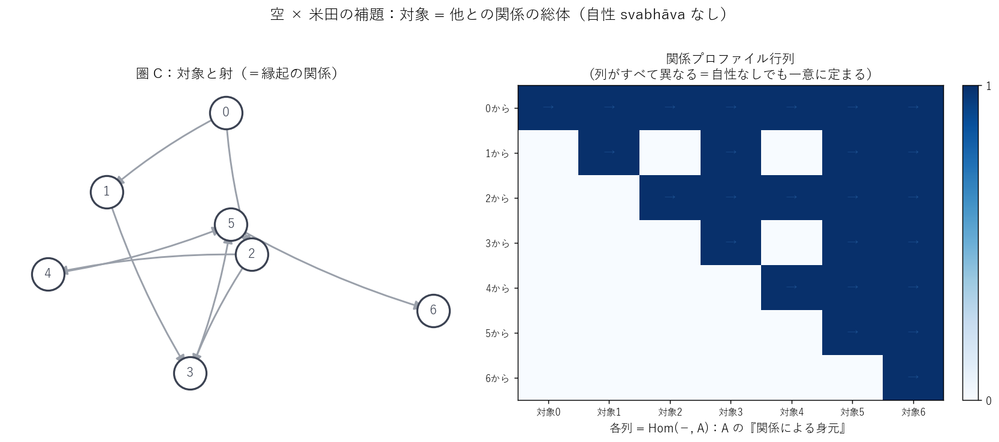
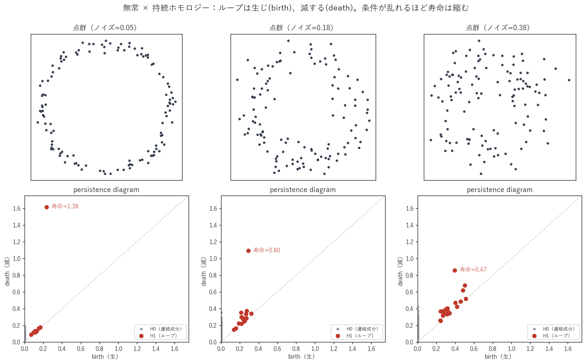
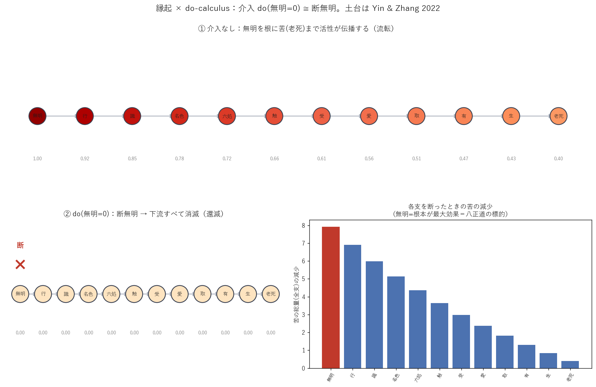

仏教の存在論を、データ可視化と数学的形式化の両面から扱う研究プロジェクト。理論で止まっている既存研究に、可視化と実装で踏み込む。
圏論の米田の補題——「対象はその外部との関係の総体で決まる」——は、龍樹の無我、すなわち「自性なき相互依存」と構造的に重なる。
無明 → … → 老死 を有向グラフ化し、do-calculus で「ある支を断つと何が消えるか」を介入シミュレート。
未着手「一即一切」を、2項関係しか持てない普通のグラフではなくハイパーグラフで表現する。
未着手メビウス変換・クライン群で、各宝珠が他の全宝珠を映す自己相似ネットを描画する。
未着手TDA の「特徴が生まれて消える」構造を、諸行無常（anitya）の数理表現として読む。
未着手


do(無明=0) ＝ 断無明。介入で下流の苦が消える。「苦の総量」で測ると根本（無明）を断つほど効果が大きく、八正道が無明を標的にする理由が数値で出る。土台は Yin & Zhang (2022)。
コード →